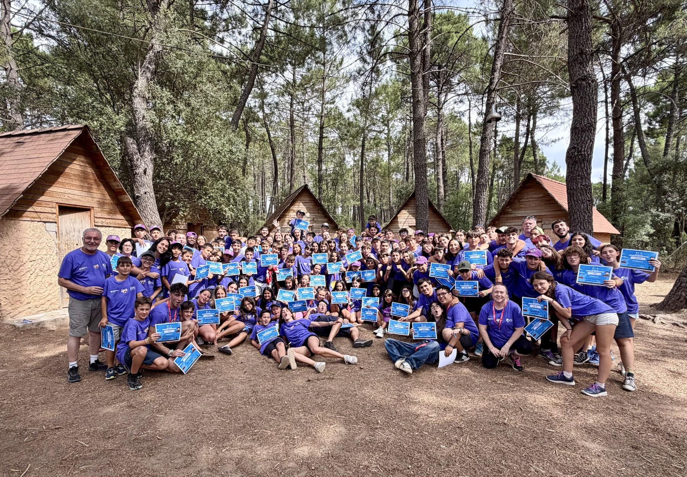
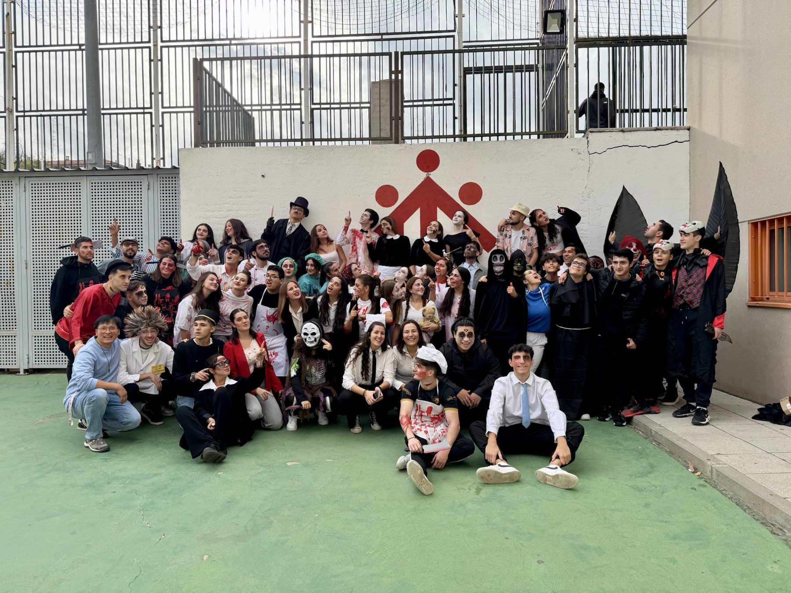

Centro Juvenil
El patio salesiano de los sábados: juegos, grupo, fe, convivencia y mucha vida compartida.
Siempre alegres

Para chicos y chicas de 8 a 19 años, en Salesianos Santo Domingo Savio.
Quiénes somos
Un centro juvenil para encontrarse, jugar y crecer.
En Savio vivimos el tiempo libre como una oportunidad para educar, acompañar y celebrar la vida. Cada sábado nos reunimos por edades para compartir dinámicas, juegos, talleres, reflexión y momentos de grupo en un ambiente cercano y salesiano.
Cada sábado
Así vivimos cada sábado.
Llegas, te encuentras con tu grupo y el sábado empieza a hacer lo suyo: jugar, hablar, compartir y crecer al estilo de Don Bosco.
Nos vemos, nos saludamos y arrancamos juntos.
Nos juntamos todos para empezar con sentido de casa.
Actividades por edades con monitores.
Movimiento, equipo y alegría compartida.
Terminamos como nos gusta: juntos y siempre alegres.
Nos vemos todos los domingos a las 12:30 h en la eucaristía de nuestra parroquia.
Secciones
Cada edad tiene su grupo.
Tres grupos para adaptar las actividades al momento vital de cada chico y chica, manteniendo siempre el mismo espíritu: amistad, alegría y acompañamiento.
8-11 años
Chiqui
Juegos, talleres, cuentos, dinámicas y primeras experiencias de grupo.12-13 años
Preas
Actividades para hacer pandilla, crecer en confianza y descubrir nuevos retos.14-19 años
Jóvenes
Convivencia, compromiso, proyectos y espacios para compartir vida y preguntas.Al estilo de Don Bosco
Casa, iglesia, escuela y patio.
Una forma sencilla de estar con los jóvenes: acoger, acompañar, educar y crear un ambiente donde todos puedan sentirse en casa.
Cómo me apunto
Este sábado puede ser tu primer día.
Puedes pasarte por el centro juvenil de 16:30 a 19:30 o escribirnos para resolver dudas antes de venir.

Contacto
Estamos en Salesianos Santo Domingo Savio.
Calle Braulio Gutiérrez 15, Madrid, portón gris. También puedes seguir la actividad del centro juvenil en redes sociales.
Calle Braulio Gutiérrez 15, Madrid · Portón gris
Esta es tu casa.
Siempre alegres.